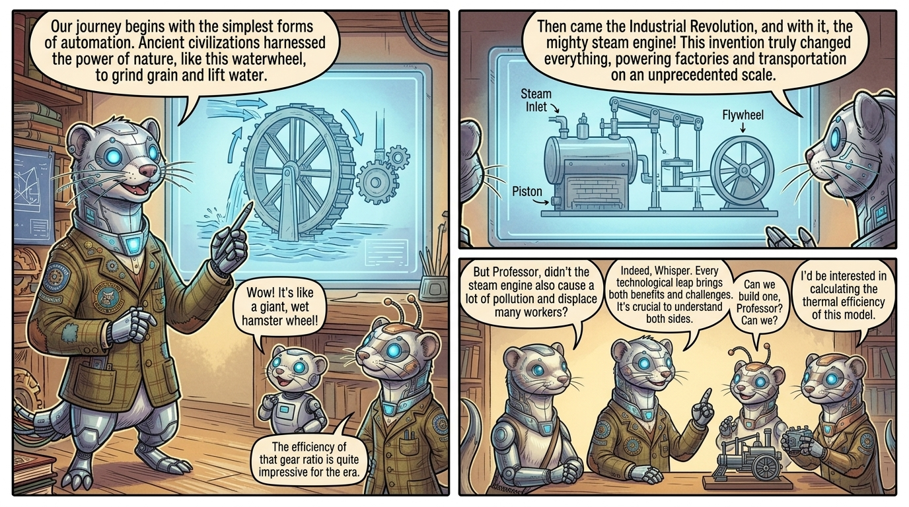

Frame 1
Wide establishing shot of the entire classroom. Professor Whiskertech stands at the center, his silver metallic fur gleaming in the morning light, blue optical sensors brightening as he powers up for the day. Around him, three student ferrets are arriving: Spark bouncing excitedly, Cog moving methodically to his seat, and Whisper observing everything thoughtfully.
Professor Whiskertech
"Ah, good morning, my curious young scholars! Today, we embark on a journey through TIME itself—the magnificent history of automation!"
Spark
"Professor! Professor! Are we going to see the ancient machines today?"
Whiskertech's Automation Academy - A place where history comes alive through technology
Frame 2
Close-up of Professor Whiskertech's face, his blue optical sensors glowing brightly, mechanical whiskers twitching with excitement. A holographic display activates near his collar, showing a timeline stretching from ancient times to the far future.
Professor Whiskertech
"Indeed, Spark! But first, let me ask you all—what IS automation? Can anyone tell me?"
Cog
"It's when machines do work instead of... well, instead of us doing it?"
The question that would shape civilization itself
Frame 3
The three student ferrets gathered around the central table, their optical sensors reflecting the glowing 3D timeline. Whisper's expression is thoughtful, Cog is examining the timeline critically, and Spark is practically vibrating with excitement.
Whisper
"But Professor, doesn't that mean fewer ferrets—or creatures—are needed to do work? What happens to them?"
Professor Whiskertech
"Ah! An excellent question, Whisper. That is precisely why we study history. Come, let us begin at the very beginning..."
The questions we ask today shape the future we build tomorrow
Visual Setting:
A sprawling futuristic classroom-laboratory bathed in soft morning light filtering through crystalline windows. The space is a blend of vintage and cutting-edge: holographic displays float in mid-air showing historical machinery, mechanical workbenches line the walls with various automation artifacts from different eras, and a large central table displays a 3D timeline of automation history. The mood is one of wonder and discovery.